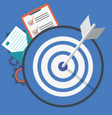

The Employee Cybersecurity Challenge Guide is designed for companies who are ready to take a more engaging and immersive
approach to reinforcing the cybersecurity awareness, knowledge and measures of employees. It is a flexible, plug-and-play
guide.
The Challenge will gamify common cyber threats at the workplace, in order to encourage employees to recall and perform the
cybersecurity measures they have learned through the preceding Kit assets. The company will also be able to evaluate
the state of cyber-readiness of the company and keep track of which of the simulated cyber threats they might need to
step up on protecting against.
The challenge consists of setting up three basic cyber threats and sending them out to employees. These cyber threats are:
- Phishing e-mails
- Privacy breach
- Unsecured Wi-Fi networks
It is recommended that this challenge take place over three to four weeks, depending on the company’s resourcing capability.
Companies can choose which challenges they wish to carry out and the sequence in which to carry them out.

Employee Cybersecurity Challenge Guide Download